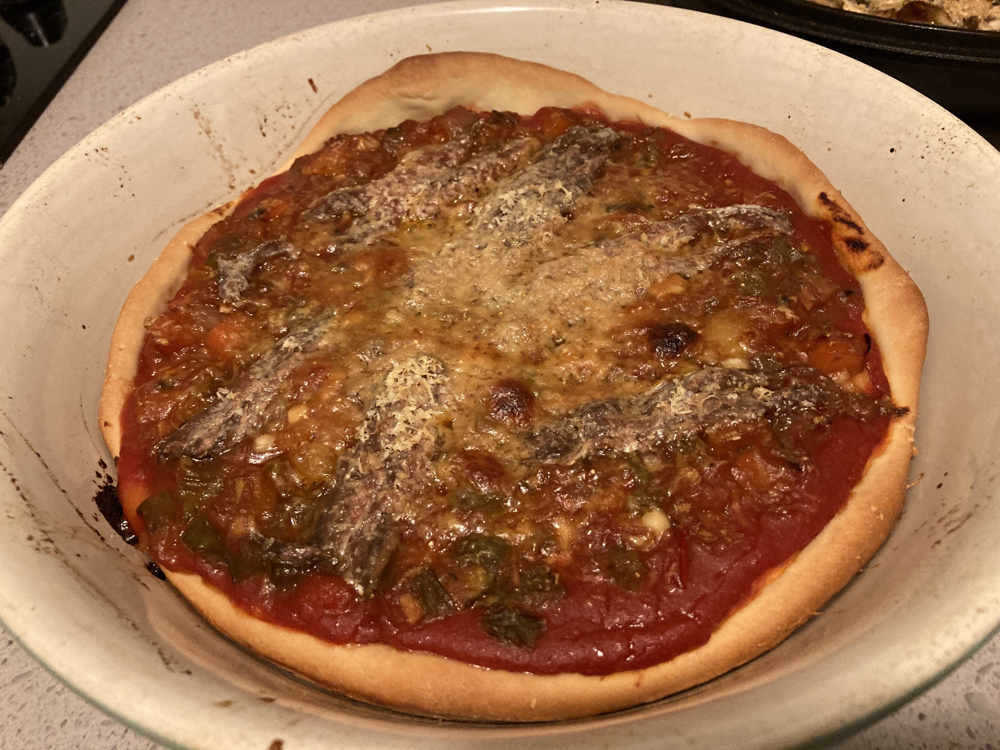

Homemade Pizza

The perfect homemade pizza for cozy nights in
In the last recipe I said that pasta has a bad rep. That goes doubly so for pizza! Most people, when they think of pizza, think of the worst most overprocessed food. It doesn't need to be this way!
Pizza was the first recipe I really learnt. I learnt it to impress my wife (then fiancé). It's since become a lynchpin weekend meal.
Try not to think of pizza as something inherently unhealthy. Think of it as a pasta sandwich, ie instead of a healthy dry pasta, you're using flour and yeast to make bread. Once easily mastered it becomes a very rewarding process!
Ingredients (serves two):
- 200g "Clancy's Soffritto"
- 150g typo 00 semolina flour
- 100ml water
- 1 tsp dry yeast (or your sourdough equivalent if applicable)
- 1/2 tsp raw sugar (don't worry, the yeast will eat it up)
- 1 tsp salt
- 1 tbsp Extra Virgin Olive Oil
- 125g Anchovies (yes, it's an acquired taste)
- 50g "Mutti" tomato puree (passatta)
- Mozarella cheese to sprinkle
- Aromatic herbs to season
How to cook:
- Make the yeast mixture by mixing the water, yeast and sugar in a small measuring jug. Give this 10 minutes before proceeding.
- Make the dry pizza dough by mixing the flour and salt in a large mixing bowl.
- Add the olive oil to the yeast mixture and add directly to the dry pizza dough. Mix this by cutting it with a butter knife.
- On a lightly floured countertop, knead out the dough. This doesn't take too long, only about 10 minutes.
- Put the pizza dough back in the mixing bowl, lightly drizzled with olive oil, and cover with a moist tea towel. Leave this to rise for 1.5 hours.
- After an hour, preheat the over to 220c celcius. On my oven this takes about 20-30 minutes.
- Once the dough has risen, make it onto a pizza! You can toss it, roll it, stretch it; however you prefer!
- Put the pizza dough onto a pizza stone or round, oven proof pan. I use a La Creusset enamel pan.
- Put the passatta onto the pizza dough. Spread it with a tablespoon.
- Put the "Clancy's Soffritto" onto the passatta. Don't push down too hard or it'll go everywhere!
- Put the anchovies onto the soffritto, spaced out evenly.
- Sprinkle the mozarella onto the pizza. I do this with my hands; it's easier to rip it than grate it.
- Season the pizza with aromatic herbs.
- Put the pizza in the oven. Turn the heat down to 200 celcius. Let it bake until the cheese melts and browns.
- Serve up!